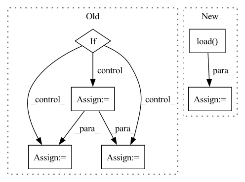

Pattern ID :40313
Before Change
if lr_scheduler is not None:
lr_scheduler.load_state_dict(checkpoint["lr_scheduler"])
if load_optimizer:
// Loading loss scale eagerly
if not args.megatron:
opt_state_dict = checkpoint["optimizer"]
optimizer.loss_scaler = opt_state_dict["loss_scaler"]
optimizer.loss_scaler.model = model
optimizer.dynamic_loss_scale = opt_state_dict["dynamic_loss_scale"]
optimizer.overflow = opt_state_dict["overflow"]
optimizer.first_closure_call_this_step = opt_state_dict["first_closure_call_this_step"]
After Change
// Loading separately for model and opt
checkpoint = torch.load(f"{local_ckpt_path}_{smp.pp_rank()}_{smp.tp_rank()}_0")
if smp.rdp_rank() != 0:
opt_checkpoint = torch.load(
f"{local_ckpt_path}_{smp.pp_rank()}_{smp.tp_rank()}_{smp.rdp_rank()}"
)
if load_model:
checkpointed_model = (
translate_hf_state_dict_to_smdistributed(checkpoint["model"], seq_length)In pattern: SUPERPATTERN
Frequency: 3
Non-data size: 6
Instances Fragment ID: 114442066
Project Name: aws/deep-learning-containers
Commit Name: 3e717d20db19b3c962141db2734b8ce2345c1ba0
Time: 2022-07-15
Author: 33940270+YangFei1990@users.noreply.github.com
File Name: test/sagemaker_tests/pytorch/training/resources/gpt2/train_gpt_simple.py
M Class Name: AnonimousClass
N Class Name: AnonimousClass
M Method Name: load_model_and_optimizer(11)
N Method Name: load_model_and_optimizer(11)
M Parent Class:
N Parent Class:
M File Name: test/sagemaker_tests/pytorch/training/resources/gpt2/train_gpt_simple.py
N File Name: test/sagemaker_tests/pytorch/training/resources/gpt2/train_gpt_simple.py
M Start Line: 307
M End Line: 348
N Start Line: 211
N End Line: 244
Before Change
print("Node\"s feature shape:{}".format(node_feat.shape))
if norm_feature:
node_feat = th.nn.functional.normalize(node_feat, p=2.0, dim=-1)
degs = graph.out_degrees().float().clamp(min=1)
norm = th.pow(degs, -0.5)
shp = norm.shape + (1,) * (node_feat.dim() - 1)
norm = th.reshape(norm, shp)
node_feat = node_feat * norm
print("Norm Feature Succeed")
graph_data = (graph, labels, tr_label_idx, val_label_idx, test_label_idx, node_feat)After Change
print(" Test label number: {}".format(test_label_idx.shape[0]))
node_feat = th.from_numpy(np.load(os.path.join(base_path, "features.npy"))).float()
walk_feat = th.from_numpy(np.load( os.path.join(base_path, "deepwalk.npy")) ).float()
features = th.cat((node_feat, walk_feat, edge_feat), dim=1)
print("//////////////////////////////// Feature info: //////////////////////////////")
print("Node\"s feature shape:{}".format(node_feat.shape)) Fragment ID: 114441835
Project Name: langgege-cqu/maxp_dgl
Commit Name: 5f428bb0d6bfb9dad16f32ca3d65785469b69c00
Time: 2021-12-11
Author: 8747734+bugczw@user.noreply.gitee.com
File Name: maxp_model_czw/unimp/util.py
M Class Name: AnonimousClass
N Class Name: AnonimousClass
M Method Name: load_dgl_graph(1)
N Method Name: load_dgl_graph(2)
M Parent Class:
N Parent Class:
M File Name: maxp_model_czw/unimp/util.py
N File Name: maxp_model_czw/unimp/util.py
M Start Line: 8
M End Line: 52
N Start Line: 13
N End Line: 47
Before Change
def main(ARGS):
// Load DeepSpeech model
if os.path.isdir(ARGS.model):
model_dir = ARGS.model
ARGS.model = os.path.join(model_dir, "output_graph.pb")
ARGS.scorer = os.path.join(model_dir, ARGS.scorer)
print("Initializing model...")
logging.info("ARGS.model: %s", ARGS.model)After Change
// load silero VAD
torchaudio.set_audio_backend("soundfile")
model, utils = torch.hub.load(repo_or_dir="snakers4/silero-vad",
model="silero_vad",
force_reload=True)
(get_speech_ts,get_speech_ts_adaptive,_, read_audio,_, _, _) = utils
// Stream from microphone to DeepSpeech using VAD Fragment ID: 114442073
Project Name: snakers4/silero-vad
Commit Name: 1814007ef5898c41efdb18a08dc694fa31f07045
Time: 2021-04-30
Author: bitrix@hotmail.it
File Name: examples/microphone_and_webRTC_integration/microphone_and_webRTC_integration.py
M Class Name: AnonimousClass
N Class Name: AnonimousClass
M Method Name: main(1)
N Method Name: main(1)
M Parent Class:
N Parent Class:
M File Name: examples/microphone_and_webRTC_integration/microphone_and_webRTC_integration.py
N File Name: examples/microphone_and_webRTC_integration/microphone_and_webRTC_integration.py
M Start Line: 156
M End Line: 199
N Start Line: 169
N End Line: 201